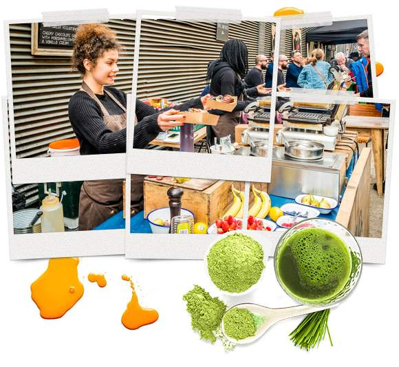
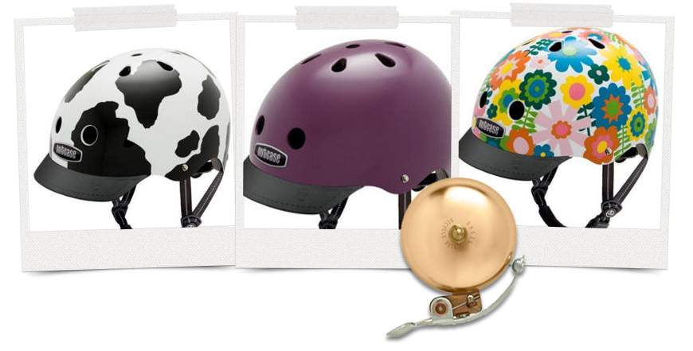

The once-parodied trappings of hipster sub-culture – from well-groomed beards to a taste for the retro – appear to have become increasingly mainstream in the last few years.
Their styles and tastes now feature heavily in advertising, for everything from snack bars to supermarkets.

Hipsters are associated with craft beers and spirits, speciality coffee and coiffured facial hair.
They love up-cycling, vintage, doing things ironically, gentrification, saving the planet and veganism, as well as wearing ancient band T-shirts.
Typewriters are preferred to laptops, bicycles instead of cars, knitting and urban bee-keeping instead of the rampant consumerism of buying a jumper and honey from a shop.

So perhaps it isn’t a surprise to see items in the latest Basket of Goods and Services, used to help the Office for National Statistics (ONS) measure price changes over time, which seem as though they could be at home in a hipster household.
Other hipster favourites:
LPs - Vinyl records were removed from the Basket of Goods in 1995. Perhaps we might see a return of this item to the basket, following an increase in sales – the highest in 25 years.
Vintage cameras - Digital cameras entered the Basket in 2004, the 35mm compact cameras were removed in 2007.
The history of the Basket of Goods
The Office for National Statistics has been using a notional Basket of Goods and Services to help measure the rising and falling cost of products and services over time, known as consumer price inflation.
This ‘shopping basket’ contains hundreds of goods and services, with some items taken out of the basket and some brought in to make sure the measures are up to date and representative of consumer spending patterns.
Find out more about the changes in the Basket of Goods since it was first conceived 70 years ago. Some basket data is missing, so we have only been able to estimate when an item was excluded from the list.
More technical information about how the Basket of Goods is compiled is available from the ONS website.
Tell us what you think
This article is a new format for us here at the ONS - please share your views on it by filling out this very short survey.